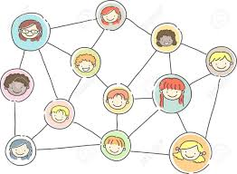
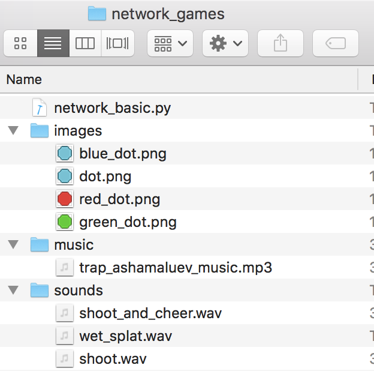

Here we will look at games that are based around the idea of a network. A network
is a collection of things (called dots, nodes or vertices) that are joined together in pairs
by connections (called lines, edges or links). Networks are used in many areas of computing and science. One application, for example, called the small world model, is used to model the spread of viruses such as the COVID-19 virus.
In our first look at networks, we won't be doing anything too fancy, just getting used to the idea and seeing what counting games we can create using them.

An example of a network (of people) and connections between pairs of people if they know each other.
Step 0: Setup and Game Assets
Change directory to your standard folder for python projects. It is probably coderdojo_tramore.
Make a new sub-directory called network_games.
Inside sub-directory network_games, make a new sub-directory called images.
Download (right click on) each of the following images and place them into the images directory.
Fig 1: Expected location of game assets after downloading above assets.

Step 1: Program network_basic.py
The Worksheet coveres the steps needed to
implement the basic game, which we saved as network_basic.py during our first online session. By the end of the session we completed the game and had the following code. This will be our starting point for this week's session. So either download the python file network_basic.py or copy/paste the code below into you editor.
from random import randint
WIDTH = 800
HEIGHT = 600
dots = []
lines = []
next_dot = 0
for dot in range(0, 10):
actor = Actor("dot")
actor.pos = randint(20, WIDTH - 20), randint(20, HEIGHT - 20)
dots.append(actor)
def draw():
screen.fill("black")
number = 1
for dot in dots:
screen.draw.text(str(number), (dot.pos[0], dot.pos[1] + 12))
number = number + 1
dot.draw()
for line in lines:
screen.draw.line(line[0], line[1], (200, 200, 0))
def on_mouse_down(pos):
global next_dot
global lines
if dots[next_dot].collidepoint(pos):
if next_dot:
lines.append((dots[next_dot - 1].pos, dots[next_dot].pos))
next_dot = next_dot + 1
else:
lines = []
next_dot = 0
Step 2: Refactor code
The Worksheet covers some of the changes that we will make to the above code but during the session we will cover the reasons for these changes in more detail.
Outline of steps:
Click on to create a new file.
Click on to save the file as network_refactored.py in your network_games folder.
Copy the code from network_basic.py into network_refactored.py.
Carry out the changes covered in the Worksheet and discussed during the session.
Our refactored code looked like.
from random import randint
WIDTH = 800
HEIGHT = 600
dots = []
lines = []
next_dot = 0
for k in range(0, 50):
dot = Actor("dot")
dot.pos = randint(20, WIDTH - 20), randint(20, HEIGHT - 20)
dots.append(dot)
def draw():
screen.fill("black")
for k, dot in enumerate(dots):
screen.draw.text(str(k+1), (dot.x, dot.y + 12))
dot.draw()
for line in lines:
start, end = line
screen.draw.line(start, end, (200, 200, 0))
def on_mouse_down(pos):
global next_dot
global lines
if dots[next_dot].collidepoint(pos):
if next_dot:
lines.append((dots[next_dot - 1].pos, dots[next_dot].pos))
next_dot = next_dot + 1
else:
lines = []
next_dot = 0
Step 3: Adding sounds, music and titles
Next it would nice to add some sound effect and to create a heads up display (HUD) showing the current state of the game.
Outline of steps:
Click on to create a new file.
Click on to save the file as network_sounds.py in your network_games folder.
Copy the code from network_refactored.py into network_sounds.py.
The sound effects are similar to what we used in Fruit Ninja games so have a look at that worksheet to see how we added both sound effects and background music. The only change here is that we have an extra sound effect, wet_splat.wav, that we use when the player misses.
The HUD is also similar to what we used in Fruit Ninja games so have a look at that worksheet to help you. The only difference in this game is that we want to show how much time has passed since the game started or, better, show a clock counting down.
Add lives, using a new global variable called lives,
Hopefully by the end of the session we will have something like the following:
Step 4: Building games
We are going to build a few games based on the network game idea, such as:
This game is just our network game, but this time we are finding words in the network. We need to use a larger dot so start by downloading
following images and place it into the images directory.
# imports of useful functions
from random import randint # randint(a,b) picks random integer between a and b
from random import choice # choice(collection) picks a random element from a collection
import string
# game date
WIDTH, HEIGHT = 800, 600
words = ["dog", "cat", "banana"]
nodes = []
edges = []
previous_node = None
level = 0
next_letter = 0
def start():
"""Function to start game (or new level)."""
global nodes, edges, previous_node
global level, words, word, next_letter
# STEP 0 - reset data
pass
# STEP 1 - pick a random word
pass
# STEP 2 - generate extra random dots based on the level
pass
# STEP 3 - generate random dots to store word
pass
def update():
"""Function to update game variables."""
pass
def draw():
"""Function to draw screen."""
global nodes, edges, previous_node
global word, level
# STEP 1 - Clear the screen
pass
# STEP 2 - Draw title and HUD
pass
# STEP 3 - Draw nodes
pass
# STEP 4 - Draw edges
pass
def on_mouse_down(pos):
"""Function to respond to mouse click events."""
global nodes, edges, previous_node
global level, word, next_letter
# CHECK - hit a correct node?
pass
# CHECK - Win level?
pass
start()


{kind=link}
{kind=link}
{kind=link}